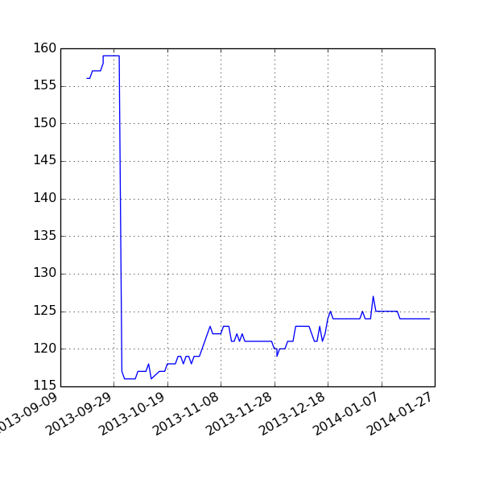

Toggle navigation
IATI Dashboard
Headlines
Data Quality
Exploring Data
Github
Download Errors
XML Errors
Validation
Versions
Licenses
Organisation XML
Organisation XML Files
124
Publishers without an Organization File

aai
aauk
adrauk
aet
afghanaid
afrikids
akvo
asdb
bracintl
cafod
caid
camfed
canoncollinstrust
cda
cdc
cif
ciuk
cordaid
cprojects
cr
cu
cuammtrustees
danida
dapp
diltuk
dipr
dochas
doh
dwp
eiuk
eti
evc
ewb_canada
fco
ff
ffi_publisher
fge
finland_mfa
foe_ewni
foundation_center
france
gain
gb-cc-220949
gl
globalintegrity
goal
grm
hewlett-foundation
hfhgb
hooda
icauk
icn
indtrust
international-alert
irw
iww_publish
jeevika_trust
karuna
lcds
lead_international
livingearth12
maec
mamta_himc
manxtimes
mapaction
mcs
mfat
mic-uk
mlf
motivation
mrc
mrc-sierra-leone
mrdf
network4africa
nfn
nrc
ocha_fts
opportunity-international-uk
oxfamgb
pa
pdorg
peopleinaid
plan_uk
plan_usa
pont
pontis
pri
progressio
psi
pwyf
rem
ri-uk
rspb_
sacbc
saferworld
sdc_ch
self-help-africa
sense_international
sida
sossaheluk
spuk
ss-org
stichting_hivos
surf
taf
tao-03473165
tbalert
tearfund
theict
tripleline_crownagents
twin-iati
uncdf
unhabitat
unw
vso
wacc-uk
waronwant
wfp
wfwiuk
womankindworld
wvuk
wwf-uk
ycare
yipl